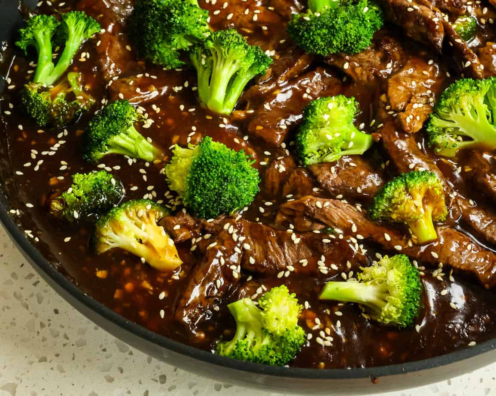

Beef and Brocolli

Description
This is a good keto recipe for beef and brocolli. You can choose to use a honey substitue to thicken the sauce
but i prefer to leave it as is and stir fry everything in the remaining marinade from the meat. It does a good
job of scratching the itch for chinese food.
Ingredients
- 1 lb top sirloin sliced
- 1 head of brocolli chopped
- 1 tbsp butter
- 1 tbsp sesame seed
Marinade
- 2 tbsp sesame oil
- 2 tbsp soy suace
- 2 cloves of garlic minced
- 1 tsp ginger minced
- 1/2 tsp ground black pepepr
- 1 tsp red pepper flakes
Steps
- Combine marinade ingredients in a bowl and whisk thoroughly
- Place sliced sirloin beef in bowl, cover, and marinate overnight
- Place butter in skillet on medium high heat until metled
- Saute brocolli in skillet for 5 minutes then set aside
- Add sirloin to skillet, cook 2 minutes each side
- Add brocolli and stir
- Serve and garnish with sesame seed
Thanks for reading, Enjoy!